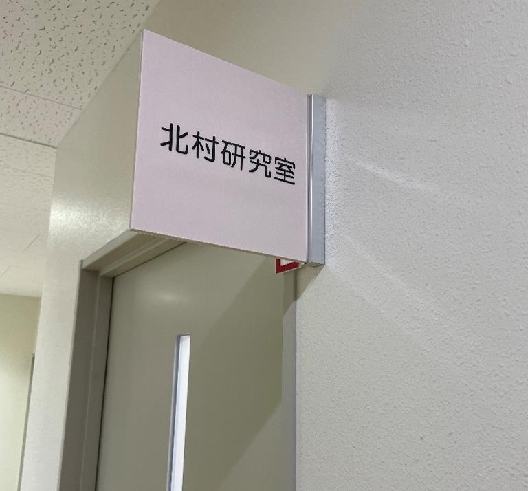
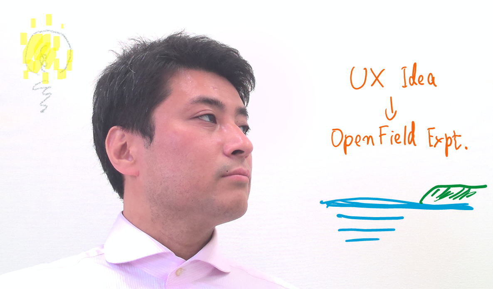

# 研究室メンバー
研究室の教員と学生は次のようになっています。
# 教員
# 氏名
北村 尊義（Kitamura,Takayoshi） (opens new window)
# 略歴
2015年，京都大学大学院エネルギー科学研究科博士後期課程指導認定退学． 同年立命館大学情報理工学部助手．2019年，同助教． 2021年2月より香川大学創造工学部准教授，現在に至る． 京都大学博士(エネルギー科学)．ヒューマンインタフェース学会評議員，会誌編集委員，電子広報委員．システム制御情報学会事業委員など．
# 担当科目
対人コミュニケーション，デザイン思考演習，デザインの潮流，ロジカル思考演習，プロブレムベースドラーニング，プロトタイプ演習，フィールドワーキング，造形メディアデザインプロジェクトベースドラーニング，文化と情報メディアⅡ，コミュニケーションデザイン演習Ⅰ，卒業研究，卒業制作
# メールアドレス
kitamura.takayoshi［★］kagawa-u.ac.jp
※［★］を@に置き換えてください。
# 学生
# B4
- 大西 晴子（Onishi, Haruko）
- 吉田 美佳（Yoshida, Mika）
# B3
- 蘆原 渚咲（Hoshikuma, Nagisa）
- 大玉 美結衣（Odama, Miyui）
- 星隈 泉穂（Hoshikuma, Mizuho）
# 共同研究者
- 仲谷 善雄（Nakatani, Yoshio）
- 泉 朋子（Izumi, Tomoko）